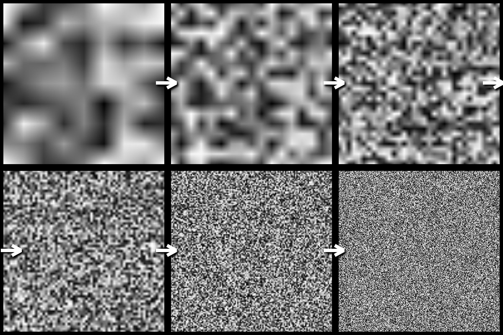
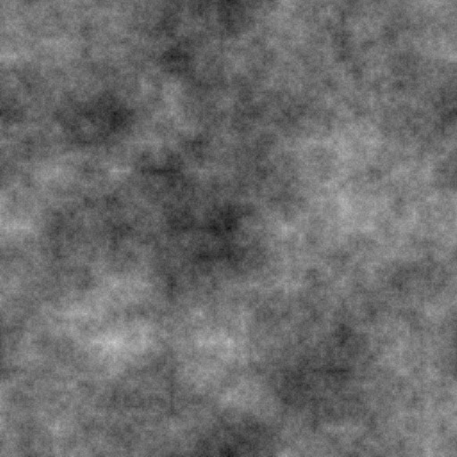
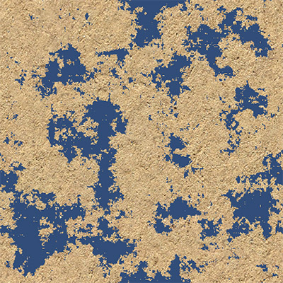
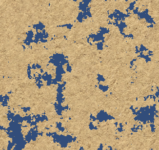
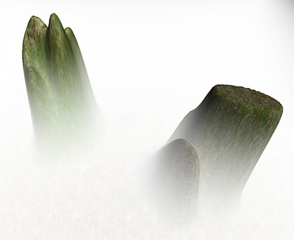
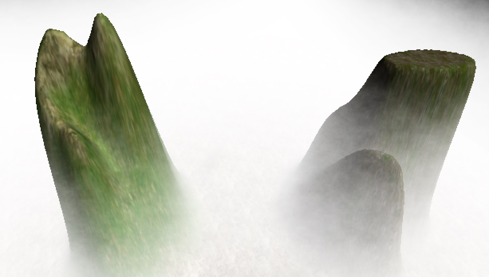
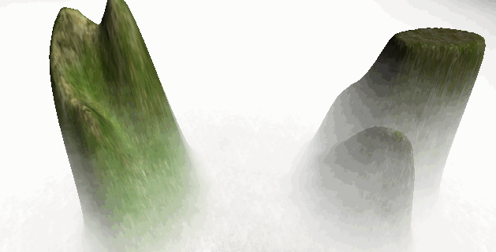

Perlin Noise 及其应用
2016-5-2
Perlin Noise 可以用来表现自然界中无法用简单形状来表达的物体的形态，比如火焰、烟雾、表面纹路等。要生成 Perlin Noise 可以使用工具离线生成，也可以使用代码运行时生成。最简单常用的离线生成工具就是 Photoshop 了，新建画布，然后直接选择云彩滤镜即可。而这里要介绍的是使用代码生成 Perlin Noise，使用代码运行时生成有几点好处。首先就是 Perlin Noise 纹理不会占用空间，如果大量使用到了 Perlin Noise Texture，这就不失为一个减少包大小的好方法，比如说地形的高度图是通过 Perlin Noise 生成的，同时又有很多张地图。还有个好处就是，运行时生成的是可以根据需要产生不同的变化的，而工具离线生成的就做不到。
以下提到的生成方法以及代码都是来自于http://devmag.org.za/2009/04/25/perlin-noise/，在此基础上加上我加入了自己的理解。
下面就来介绍下使用代码生成 Perlin Noise 的几个步骤：
生成一张随机杂点的纹理

随机杂点纹理是生成 Perlin Noise 的基础，以后所有要用到的数据都是从这张纹理衍生出来的。
private float[,] GenerateWhiteNoise(int width, int height)
{
// 这里的随机数种子很重要
// 如果想要每次生成的 Perlin Noise 都一样，只要设置一个相同的值即可
// 这里使用随机种子，所有每次都会生成不同的 Perlin Noise
Random.seed = Random.Range(int.MinValue, int.MaxValue);
float[,] noise = new float[width, height];
for (int i = 0; i < width; i++)
{
for (int j = 0; j < height; j++)
{
noise[i, j] = Random.value;
}
}
return noise;
}
使用不同的采样率对随机杂点纹理进行采样

上图中每一小块是使用不同的采样率对随机杂点纹理进行采样的结果。采样率越小，获得的细节越少，采样率越大，获得的细节越多。左上角的采样率是最小的，所以细节越少。右下角的采样率最大，所以细节越多。我们将使用这几张图来合成最终的 Perlin Noise。在合成过程中，每一张图的合成比重是不一样的，细节越少的占用更多的合成比重，细节越多的占用更少的合成比重。以上图来举例，也就是说，左上角的那张采样纹理决定了 Perlin Noise 最终的大致形状，以后的所有纹理逐一叠加来提供细节，但是比重越来越小。
// 生成指定采样级别的 Noise
private float[,] GenerateSmoothNoise(float[,] whiteNoise, int octave, int width, int height)
{
float[,] smoothNoise = new float[width, height];
// 采样步长
int samplePeriod = (int)Mathf.Pow(2, octave);
// 采样频率
float sampleFrequency = 1.0f / samplePeriod;
for (int i = 0; i < width; i++)
{
// 最左点位置
int sampler_l = (i / samplePeriod) * samplePeriod;
// 最右点位置
int sampler_r = (sampler_l + samplePeriod) % width;
// 根据实际点与最左最右的距离，计算水平混合系数
float horizontal_blend = (i - sampler_l) * sampleFrequency;
for (int j = 0; j < height; j++)
{
// 最上点位置
int sampler_t = (j / samplePeriod) * samplePeriod;
// 最下点位置
int sampler_d = (sampler_t + samplePeriod) % height;
// 根据实际点与最上最下的距离，计算垂直混合系数
float vertical_blend = (j - sampler_t) * sampleFrequency;
// 左上和右上根据水平混合系数进行插值
float top = Interpolate(whiteNoise[sampler_l, sampler_t], whiteNoise[sampler_r, sampler_t], horizontal_blend);
// 左下和右下根据水平混合系数进行插值
float bottom = Interpolate(whiteNoise[sampler_l, sampler_d], whiteNoise[sampler_r, sampler_d], horizontal_blend);
// 最总数值为 top down 根据垂直混合系数进行插值
smoothNoise[i, j] = Interpolate(top, bottom, vertical_blend);
}
}
return smoothNoise;
}
// 在两个数值间进行插值
private float Interpolate(float x0, float x1, float alpha)
{
return x0 * (1 - alpha) + alpha * x1;
}
合成最终的 Perlin Noise

使用面生成的所有采样纹理来合成最终的 Perlin Noise。
public float[,] GeneratePerlinNoise(float[,] whiteNoise, int octaveCount, int width, int height)
{
// 不同采样级别的 Noise
List<float[,]> smoothNoise = new List<float[,]>();
// 不同采样级别的 Noise 的叠加系数
float persistance = 0.8f;
// 生成不同采样级别的 Noise
for (int i = 0; i < octaveCount; i++)
{
smoothNoise.Add(GenerateSmoothNoise(whiteNoise, i, width, height));
}
// 最终生成的 Perlin Noise
float[,] perlinNoise = new float[width, height];
// 不同采样级别的 Noise 的叠加比重
float amplitude = 1.0f;
// 所有采样级别的 Noise 的叠加总比重
float totalAmplitude = 0.0f;
// 开始混合所有采样级别的 Noise
for (int octave = octaveCount - 1; octave >= 0; octave--)
{
amplitude *= persistance;
totalAmplitude += amplitude;
for (int i = 0; i < width; i++)
{
for (int j = 0; j < height; j++)
{
perlinNoise[i,j] += smoothNoise[octave][i,j] * amplitude;
}
}
}
// 归一化最终的 Perlin Noise
for (int i = 0; i < width; i++)
{
for (int j = 0; j < height; j++)
{
perlinNoise[i,j] /= totalAmplitude;
}
}
return perlinNoise;
}
这里有一点是需要注意的，我们很多时候想要生成的 Perlin Noise 需要是一张循环纹理（可以平铺在表面上，在衔接处不会产生不自然的效果）。原始资料中指出，关键点就在 Mathf.Pow(2, octave) 这里，以及提供的 width 和 height 需要是2的幂次方。其实也可以是 Mathf.Pow(3, octave)，width 和 height 是3的幂次方（一般都使用2的幂次方）。其原因就在生成采样纹理时，进行插值的部分。如果每一行（列）的最后一步插值可以正好是下一个 Tile 的第一个点，那么就会生成一个循环的 Perlin Noise。
应用：残蚀效果
| _ | _ |
|---|---|
|  |  |
不同的 Perlin Noise 会产生不同的残蚀效果，我们可以多生成几张 Perlin Noise 纹理，经过对比来达到想要的效果。也可以把几张 Perlin Noise 纹理进行叠加，产生更丰富的效果。一般来说，直接将 Perlin Noise 纹理叠加到 Diffuse 纹理上是不会产生这么锐利的边缘过度的，所以需要对 Perlin Noise 渐变过度进行放大处理，这个放大操作可以预处理在 Texture 上，也可以在 Shader 中。
应用：动态体积雾
| 原始FogVolume | Perlin Noise FogVolume | Perlin Noise FogVolume GIF |
|---|---|---|
|  |  |  |
体积雾的实现原理可以看这里，效果就是左图。可以看到雾并没有层次，也无法表现出在空中飘动的效果。使用 Perlin Noise 叠加后，雾就有了层次感（中间图），对 Perlin Noise Texture 进行 uv 动画后，雾也产生了飘动的效果（右图），并且由于我们的 Perlin Noise 是可平铺的，所以 uv 动画在边缘不会产生突变。